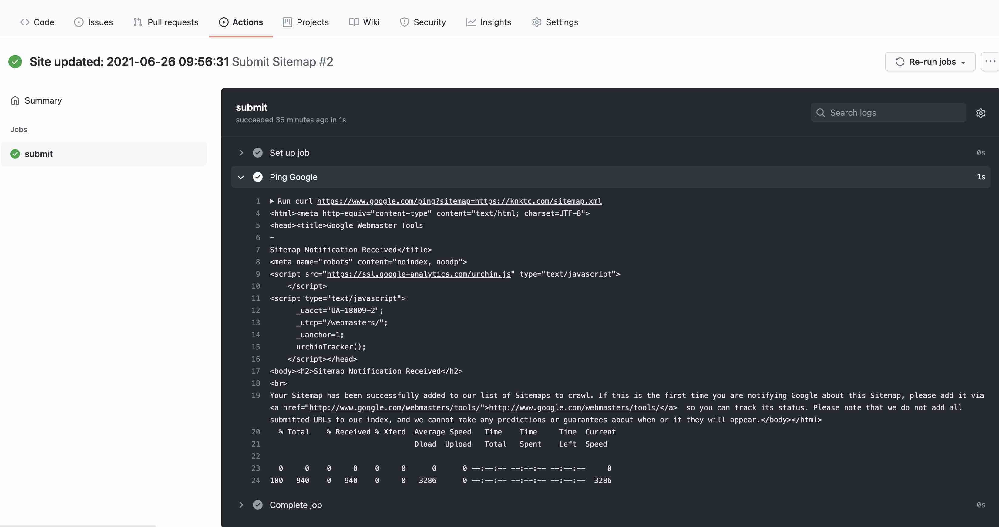

我的这个博客使用了Hexo，使用传统的hexo deploy方法，通过git来部署到GitHub上。最近寻思着每次发布文章的时候可以用GitHub Actions功能来自动触发个工作流，自动给Google提交下最新的sitemap。这篇文章就记录了下如何进行相关的配置。
创建工作流配置
GitHub Actions的工作流是通过git项目中的 .github/workflows 下的yaml文件来配置的，可以在hexo的source目录下提前创建好相关的路径和配置文件，以便于生成文件后直接进行push。
在source目录下创建好 .github/workflows/sitemap.yml 文件，填入配置：
1 | # workflow to summit Sitemap to google, etc. |
配置很简单：给master分支提交代码时会自动触发工作流，给Google提交下sitemap。
老实说我并不知道百度应该如何通过curl来提交sitemap，所以这里就光写了给google提交sitemap的操作。由于GitHub也在境外，提交这个sitemap应该没有任何问题。
配置Hexo，允许隐藏目录
不提前配置下的话， .github 这个隐藏的目录在进行generate操作时并不会被处理，需要配置下hexo，手动加入这个目录及下面的子目录和文件：
打开hexo的_config.yml配置文件，加入以下的配置，让hexo在生成静态文件时可以处理这个隐藏的目录：
1 | include: |
此时还需要修改下 skip_render 这个配置，否则hexo会自动把yaml文件给转成json格式的，到时候GitHub是不识别的：
1 | skip_render: |
最后需要配置下hexo的 deploy 配置，不要忽略隐藏文件。否则在最后部署到GitHub时，隐藏文件会被忽略掉：
1 | deploy: |
测试
配置完了之后测试下：
1 | hexo clean |
检查下public目录下，看刚才的workflow配置文件生成了没有：
1 | ls public/.github/workflows/sitemap.yml |
如果在public下生成了配置文件，就可以进行部署了：
1 | hexo deploy |
在GitHub上看看.github/workflows目录是否已经被上传，同时还可以看到Actions中已经有成功执行的工作流任务了：

OK，完成。